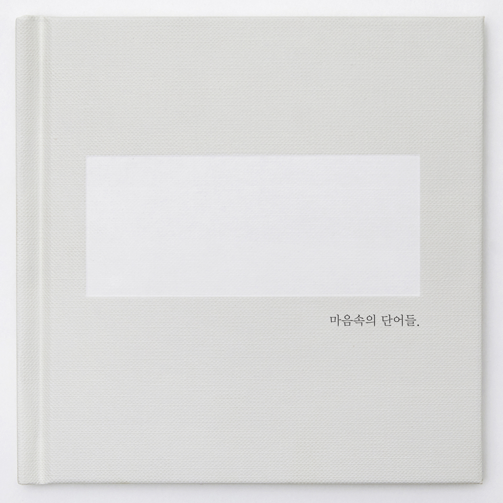

안녕하세요 라보엠입니다.
아직은 겨울이지만 꼭 봄이 곧 올것 같은 기분입니다. 봄날을 기다리며 듣기 좋을 노래 에피톤 프로젝트의 첫사랑을 소개해드리겠습니다. 이 노래는 에피톤 프로젝트의 4집 앨범 마음속의 단어들(2018)에 수록된 곡으로, 뮤직비디오에는 국민 첫사랑 수지와 남윤수가 주인공으로 출연했으며, 영화 건축학개론에 이어 첫사랑의 이미지를 다시 만들어냈습니다.
에피톤 프로젝트 첫 사랑 뮤비
대학시절 풋풋했던 첫사랑의 추억이 너무 아름답게 담겨있어서 건축학개론과도 비슷한 기분을 느낄 수 있습니다. 개인적으로는 건축학개론보다 이 뮤비에 수지가 더 예쁘게 담겨있다고 생각합니다. 대학시절 좋아했던 아니 동경했던 수지를 그리워하는 역할로 남윤수가 출연했는데, 수지랑도 잘 어울렸습니다. (남윤수 정도의 얼굴로도 수지는 안되는구나..) 그리고, 엔딩롤에 필름 사진들이 나오는데 모든 컷이 너무 예쁩니다. 영상에서는 수지가 니콘 FM2를 사용하는 장면이 나오는데, 이 컷은 어떤 카메라로 찍었을지 궁금하네요. 첫사랑 뮤비의 촬영장소는 계원예술대학교입니다.
에피톤 프로젝트 첫 사랑 뮤비 메이킹필름
에피톤 프로젝트 - 첫 사랑 가사
#01.
처음 널 만나던 그 순간
숨이 벅차오르던 기억
혹시 네가 들었을까 봐
들켰을까 봐 마음 졸이던 날 기억해
#02.
넌 참 목소리가 좋았어
같이 걸을 때 더 좋았어
그래 그럴 때가 있었어
가슴 시리게 사랑했었던 날 있었어
넌 나에게 매일 첫사랑
봄눈이 오듯 그렇게 나는 기다려
설레이던 그날도 취했었던 그 밤도
마음이 이상해 바람 불어올 쯤이면
넌 나에게 매일 첫사랑
봄눈이 오듯 그렇게 나는 기다려
슬퍼 울던 그날도 비틀대던 그 밤도
마음이 이상해 바람 불어올 쯤이면 여전히
#03.
때론 사랑은 참 외로워
그래 삶이란 늘 어려워
알아 우리 함께 했던 날
가슴 시리게 사랑했었던 날 있었어
#04.
넌 나에게 매일 첫사랑
봄눈이 오듯 그렇게 나는 기다려
설레이던 그날도 취했었던 그 밤도
마음이 이상해 바람 불어올 쯤이면
넌 나에게 매일 첫사랑
봄눈이 오듯 그렇게 나는 기다려
슬퍼 울던 그날도 비틀대던 그 밤도
마음이 이상해 바람 불어올 쯤이면 여전히
첫사랑
그렇게 나는 기다려

수지 출연 영화 & 드라마
얼마전에 넷플릭스에 올라온 드라마 이두나 때문에 쿠플에서 안나를 찾아보게 되었었는데, 재밌었습니다. 거짓말로 시작된 그녀의 일생의 결말은 파국일 수 밖에 없었지만, 그 가운데서도 보여준 그녀의 능력은 꽤 괜찮았던 것 같습니다. 건축학개론과 함께 찾아보시면 좋을 것 같습니다.
건축학개론 (2012) :: 볼 수 있는 곳
생기 넘치지만 숫기 없던 스무 살, 건축학과 승민은 '건축학개론' 수업에서 처음 만난 음대생 서연에게 반한다. 함께 숙제를 하게 되면서 차츰 마음을 열고 친해지지만, 자신의 마음을 표현하는
m.kinolights.com
안나 (2022) :: 볼 수 있는 곳
이름, 가족, 학력, 과거까지... 사소한 거짓말을 시작으로 완전히 다른 사람의 인생을 살게 된 여자의 이야기
m.kinolights.com
이두나! (2023) :: 볼 수 있는 곳
평범한 대학생 원준이 셰어하우스에서 화려한 K-POP 아이돌 시절을 뒤로하고 은퇴한 두나를 만나게 되며 벌어지는 이야기를 담은 로맨스 드라마 9부작
m.kinolights.com